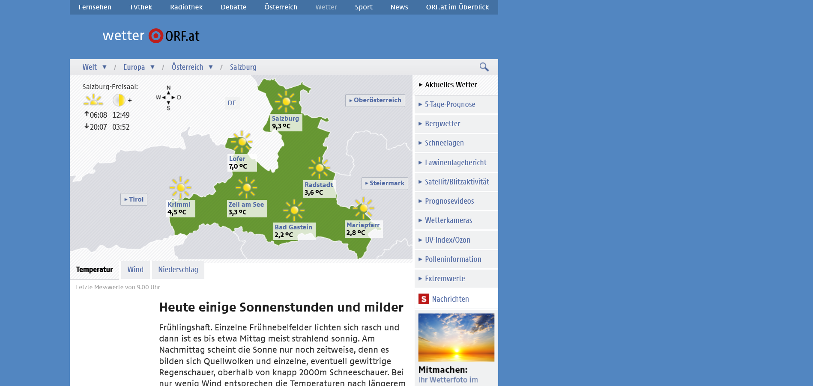
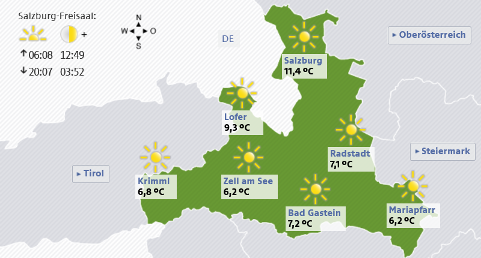

Fernsehen
Radiothek
Debatte
TVthek
Österreich
Wetter
Sport
News
Orf.at im Überblick
Welt ▾
Afrika
Asien
Australien und Ozeanien
Europa
Naher Osten
Nord- und Mittelamerika
Südamerika
Europa ▾
Deutschland, Schweiz
Frankreich, Benelux
Großbritannien, Irland
Italien, Adria-Raum
Nordeuropa
Österreich
Osteuropa
Polen, Baltikum
Spanien, Portugal
Südosteuropa
Ungarn, Tschechien, Slowakei
Österreich ▾
Burgenland
Kärnten
Niederösterreich
Oberösterreich
Salzburg
Steiermark
Tirol
Vorarlberg
Wien
Salzburg
